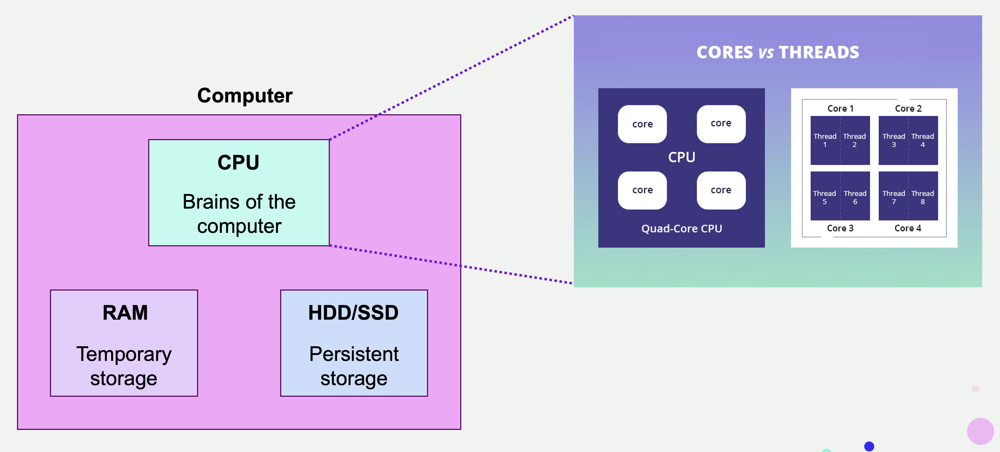
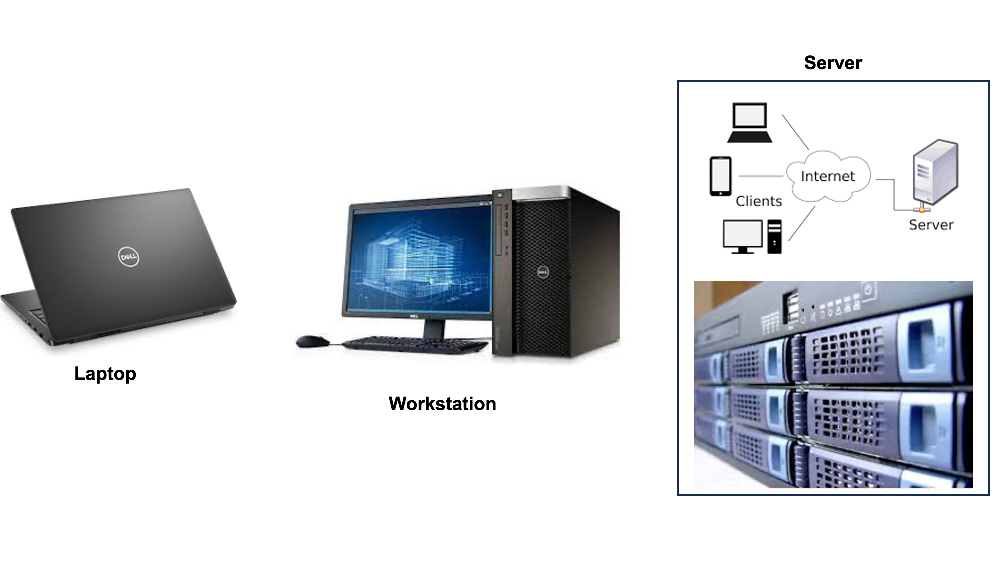
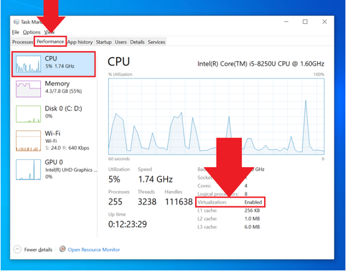
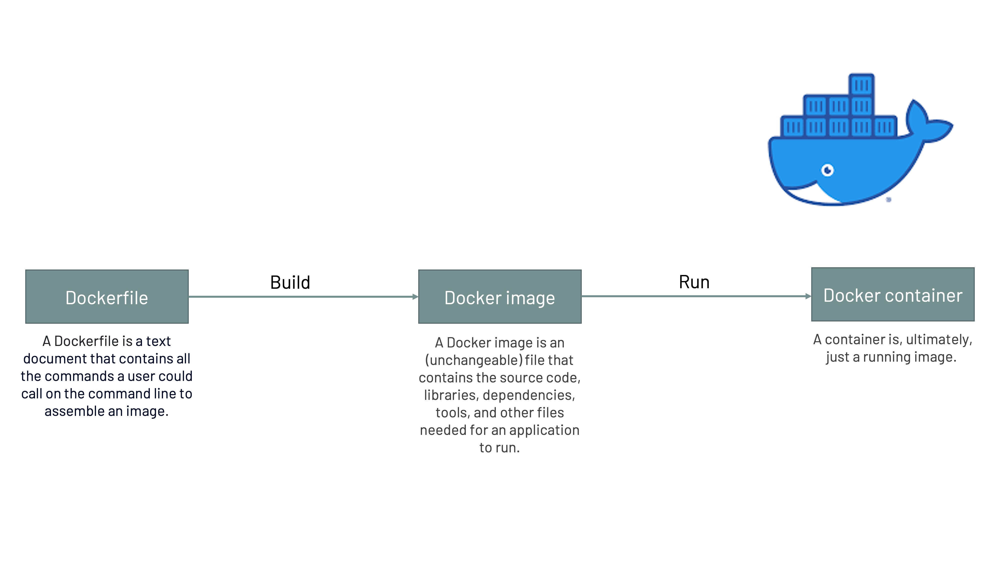
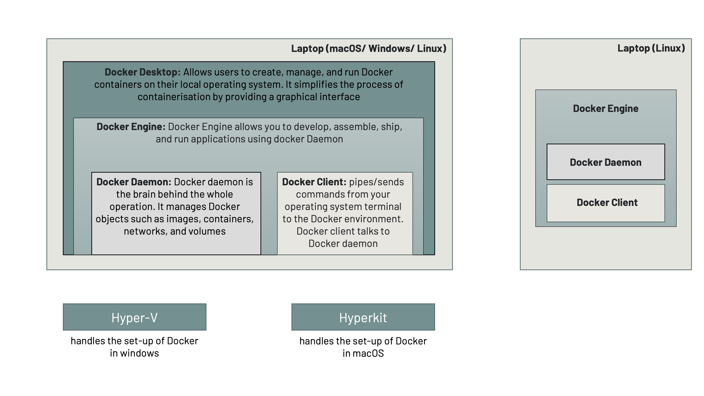
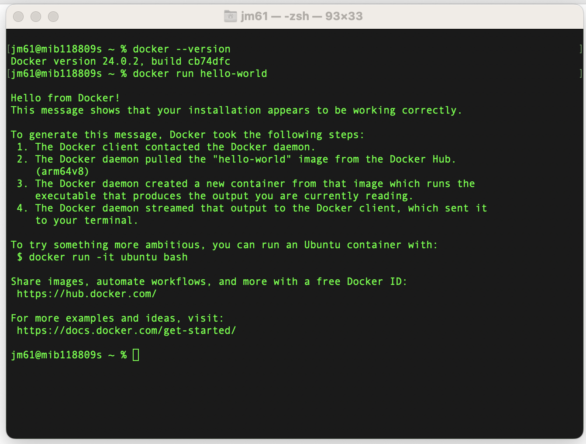
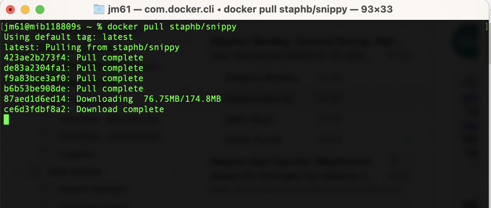

To analyse genomic data, you will need:
Data to learn this course can accessed using this link:
We will begin by defining a few concepts about computers that will be frequently used throughout this course.
Note:Having multiple cores and threads can significantly improve a CPU's performance, especially in scenarios where multiple tasks or applications are running simultaneously, such as in modern computing environments where multitasking is common. It enables smoother and more efficient processing of tasks, reducing bottlenecks and enhancing overall system responsiveness.

To successfully complete this course, you will need ~100GB HDD/SSD free space in a single partition/drive and atleast 8GB of RAM, to store input data (i.e., raw reads [fastq files]and databases [kraken - 8GB; serotyping databases (seroba_k71_14082017 & GBS-SBG); and popPUNK database - 21GB), and output data.
Outside this course, the choice of computing platform can be selected based on amount of data generated per year. For example, if generating:

An operating system (OS) is a fundamental software component that manages and controls a computer's hardware resources and provides a foundation for running applications. It serves as an intermediary between the hardware and software, allowing users and applications to interact with and utilize the computer's resources effectively.
Unix, Linux, and Windows are three different families of OS used on computers and servers. Here are some key differences between them:
Note
Both Unix and Linux provide
text-based and graphical user interfaces. Users can choose to work in a
command-line environment or use graphical desktop environments. While Unix and Linux
have graphical interfaces, they are known for their powerful command-line
interfaces. Many tasks and system administration can be performed more efficiently
through the command line. These operating systems use a hierarchical file system
with directories and files. File paths are case-sensitive.
Windows is primarily known for its graphical user interface (GUI), with versions
like Windows 10 and 11 offering a modern, user-friendly desktop interface. Windows
has a strong emphasis on GUI-based interaction, and many users may not need to use
the command line for day-to-day tasks.
If you are a Windows user, we recommend that you install Linux OS given that it has powerful command-line interfaces.
How to install Ubuntu in Windows computer
To install Ubuntu on a Windows computer, you can use the Windows Subsystem for Linux (WSL), which allows you to run a Linux distribution alongside your existing Windows installation without the need for dual-booting. Here are the steps to install Ubuntu using WSL:
a. Prerequisites:
1. Windows 10 or later: Ensure that you are running Windows 10 or a later version.
2. Enable WSL: Open PowerShell
as Administrator and run the following command to enable WSL:
dism.exe
/online /enable-feature /featurename:Microsoft-Windows-Subsystem-Linux /all
/norestart
3. Enable Virtualization: If you're using a virtual machine, ensure that virtualization is enabled in your BIOS/UEFI settings. You can check if virtualisation is enabled on your task manager as shown in the image below

b. Install Ubuntu using CLI:
1. Open PowerShell: Open PowerShell as Administrator.
2. Download Ubuntu Image:
Download the Ubuntu image (choose the version you want) using the curl
command: curl.exe -o ubuntu-20.04.appx https://aka.ms/wslubuntu2004
Replace
20.04 with the desired version.
3. Install Ubuntu:
Install Ubuntu using the Add-AppxPackage PowerShell cmdlet:
Add-AppxPackage
.\ubuntu-20.04.appx
4. Launch Ubuntu:
After the installation is complete, launch Ubuntu by
running: ubuntu2004
5. Set Up Ubuntu: The first time you launch Ubuntu, it will ask you to set up a new user account with a username and password.
c. Update and
Upgrade. After setting up Ubuntu, it's a good idea to update the package
lists and upgrade the installed packages to ensure you have the latest
software versions. Open the Ubuntu terminal and run the following
commands:
sudo apt update
sudo apt upgrade
Before we list the bioinformatics tools required to analyse genomic data, we will first need to understand various software management applications that we would need to run these tools :
Software management applications are indispensable tools in bioinformatics because they simplify software management, enhance reproducibility, support collaboration, and provide the flexibility needed to tackle the complex and dynamic nature of biological data analysis. These tools contribute to the efficiency and rigor of bioinformatics research and analysis workflows. Here, we will provide an overview of two software management applications, i.e., Docker and Conda.
Overview
Docker is an open platform for developing, shipping, and running applications. It provides the ability to package and run an application in a loosely isolated environment called a container. Containers are lightweight and contain everything needed to run the application, so you do not need to rely on what is currently installed on the host; i.e., it involves bundling an application together with all of the necessary configuration files, libraries, and dependencies to ensure the software can run in a reproducible fashion across a diversity of computing environments. You can easily share containers while you work, and be sure that everyone you share with gets the same container that works in the same way.
Docker architecture
Installing and running docker is dependent on the computer’s operating system. We will define some key concepts that you will come across when installing and running docker.

To install Docker on your system, you have two primary options: Docker Engine and Docker Desktop.
Note
HyperKit is a lightweight hypervisor designed for macOS operating systems. It is an open-source virtualisation tool that provides virtualisation capabilities on macOS, making it possible to run virtual machines (VMs) and containers on Mac computers. HyperKit is often associated with Docker for Mac, as it is one of the components used by Docker to enable containerisation and virtualisation on macOS.
Hyper-V is a virtualisation platform and hypervisor technology developed by Microsoft. It allows you to create and manage virtual machines (VMs) on Windows-based systems. Hyper-V is commonly used for server virtualisation, testing and development environments, and running multiple operating systems on a single physical machine.

How to install Docker
a. Steps to install Docker on macOS:
1. Download Docker Desktop:
2. Install Docker Desktop:
3. Run Docker Desktop:
4. Login to Docker Hub (Optional):
5. Configure Resources (Optional):
6. Start Docker Desktop:
7. Verify Installation:
docker
--version
docker run
hello-world

b. Steps to install Docker on ubuntu:
Run the following commands on you ubuntu terminal
1. Update Package Lists:
sudo apt
update
2. Install Prerequisites:
sudo apt install
apt-transport-https ca-certificates curl software-properties-common
3. Add Docker's GPG Key:
curl -fsSL
https://download.docker.com/linux/ubuntu/gpg | sudo gpg --dearmor -o
/usr/share/keyrings/docker-archive-keyring.gpg
4. Set Up the Stable Docker Repository:
For Ubuntu 20.04 (Focal Fossa):
echo "deb [arch=amd64
signed-by=/usr/share/keyrings/docker-archive-keyring.gpg]
https://download.docker.com/linux/ubuntu focal stable" | sudo tee
/etc/apt/sources.list.d/docker.list > /dev/null
5. Install Docker Engine:
sudo apt
update
sudo apt install docker-ce
docker-ce-cli containerd.io
6. Start and Enable Docker:
sudo systemctl start
docker
sudo systemctl enable
docker
7. Verify Docker Installation:
docker
--version
8. Run a Test Container:
docker run
hello-world
If everything is set up correctly, you should see a message indicating that your Docker installation is working.
9. Manage Docker as a Non-root User (Optional):
To avoid using sudo with every Docker command, add your user to the docker group:
sudo usermod -aG docker
$USER
Log out and log back in or restart your system for the changes to take effect.
Docker Usage
In this course, we will be using Docker as a our software management application and Docker images (bioinformatics tools) built and catalogued by Sanger Pathogens, the State Public health Bioinformatics (StaPH-B) and NCBI.
Step 1: Downloading a Docker image
Download an image from a repository
by using the docker pull command:
docker pull
repository/(name_of_container):(tag)
For example
docker pull
staphb/snippy
An explanation of this command is as follows:
docker pull: instructs Docker to download an image from a repository
staphb/snippy: is the docker image
When you pull a docker image, you should see an output similar to this…

Step 2: Running a Docker image
Starting a container from a docker
image is simply done using the command docker run. A brand new
Docker container is then created, and will run any command you provide within the
container.
For example
docker run --rm=True -v
$PWD:/data
-u $(id -u):$(id -g) staphb/fastqc fastqc 21999_7#176*.fastq.gz
An explanation of this command is as follows:
docker run: function to start a new container
--rm=True: By default, when a Docker container is run without this flag, the Docker container is created,the container runs, and then exits, but is not deleted. In other words, Docker containers are NOT ephemeral by default. A local copy of the container is kept and takes up unnecessary storage space. It is a good idea to always use this flag so that the container is removed after running it, unless for some reason you need the container after the specified program has been run.
-v $PWD:/data: The -v flag mounts a volume between your local machine and the Docker container. This specific command mounts the present working directory to the /data directory within the Docker container, which makes the files on your local machine accessible to the container. You can change these paths to meet the needs of your system, however it is a good idea to have a working directory in each of the containers, and thus each container contains the /data directory for such purpose.
--u $(id -u):$(id -g): By default, when Docker containers are run, they are run as the root user. This can be problematic because any files created from within the container will have root permissions/ownership and the local user will not be able to do much with them. The -u flag sets the container's user and group based on the user and group from the local machine, resulting in the correct file ownership.
staphb/fastqc: is the docker image. [ staphb - is the repository; fastqc - is the name of the container image]
fastqc : Command to run in that container
21999_7#176*.fastq.gz: Option(s) of the command (paths in options are based on container file system).
To avoid long commands, the [docker run --rm=True -v $PWD:/data -u $(id -u):$(id -g)] command can be incorporated into a bash function by including the following into your ~/.bashrc (if you are using Bash shell / Linux) or ~/.zshrc (if you are using Z shell / macOS)
# For Bash Shell, run the command:
echo 'function
docker_run() { docker run --rm=True -u $(id -u):$(id -g) -v $(pwd):/data "$@" ;}' >>
~/.bash_profile
# For Z Shell, run the command:
echo 'function
docker_run() { docker run --rm=True -u $(id -u):$(id -g) -v $(pwd):/data "$@" ;}' >>
~/.zshrc
You need to be in your home directory and then run the one of the following commands depending on your shell
You need to restart the Terminal for this change to take effect or Source the Bashrc by running the command:
source ~/.bash_profile
To check the above command has
worked properly open bashrc file using:
cat .bash_profile or cat .zshrc
Docker images/Bioinformatics tools
We will use various bioinformatics tools in this course, and the table below shows a list of tools required for this course. These tools can be accessed and executed using Docker platform.
| Tool | Website | Brief Description | Installation |
|---|---|---|---|
| FastQC | https://github.com/s-andrews/FastQC | Quality assessment for high throughput sequencing datasets | docker pull staphb/fastqc |
| Trimmomatic | https://github.com/usadellab/Trimmomatic | Adapter trimming | docker pull staphb/trimmomatic |
| bwa | https://github.com/lh3/bwa | Mapping DNA sequences | docker pull staphb/bwa |
| samtools | https://github.com/samtools/ | Manipulating NGS | docker pull staphb/samtools |
| SPAdes | https://github.com/ablab/spades/releases | De novo assembly | docker pull staphb/spades |
| snp-sites | https://github.com/sanger-pathogens/snp-sites | Rapidly extract SNPs from a multi-FASTA alignment | docker pull staphb/snp-sites |
| QUAST | https://github.com/ablab/quast | Quality assessment for genome assemblies | docker pull staphb/quast |
| BLAST | https://github.com/ncbi/blast_plus_docs | Compares nucleotide or protein sequences to sequence databases and calculates the statistical significance of matches | docker pull ncbi/blast |
| Kraken2 | https://github.com/DerrickWood/kraken2 | Kraken is an ultrafast and highly accurate program for assigning taxonomic labels to metagenomic DNA sequences | docker pull staphb/kraken2 |
| snippy | https://github.com/tseemann/snippy | Rapid haploid variant calling and core genome alignment | docker pull staphb/snippy |
| FastTree | http://www.microbesonline.org/fasttree/ | Phylogenetic tree builder | docker pull staphb/fasttree |
| Gubbins | https://github.com/nickjcroucher/gubbins | Builds phylogeny after removing regions of recombination | docker pull sangerpathogens/gubbins |
| popPUNK | https://github.com/bacpop/PopPUNK | Clustering | docker pull staphb/poppunk |
| Abricate | https://github.com/tseemann/abricate | Mass screening of contigs for antimicrobial resistance or virulence genes | docker pull staphb/abricate |
| Prokka | https://github.com/tseemann/prokka | Prokka is a software tool to annotate bacterial, archaeal and viral genomes quickly and produce standards-compliant output files | docker pull staphb/prokka |
| Any2fasta | https://github.com/tseemann/any2fasta | Convert various sequence formats to FASTA | docker pull staphb/any2fasta |
| ARIBA | https://github.com/sanger-pathogens/ariba | Antimicrobial Resistance Identification By Assembly | docker pull staphb/ariba |
| SeroBA | https://github.com/sanger-pathogens/seroba | Identify the Serotype from Illumina NGS reads for given references | docker pull staphb/seroba |
| SRST2 | https://github.com/katholt/srst2 | Gene detection and MLST | docker pull staphb/srst2 |
| mlst | https://github.com/tseemann/mlst | Scan contig files against traditional PubMLST typing schemes | docker pull staphb/mlst |
To check that Docker images have been downloaded, run the command:
docker images | grep
"staphb\|sanger\|ncbi"| wc -l
There should be 20
Definitions
Anaconda:is a distribution of Python and R programming languages for scientific computing, data science, machine learning, and related domains. It includes a variety of pre-installed libraries and tools commonly used in these fields. Anaconda simplifies the process of managing packages and environments for data science projects. Simply, Anaconda is a comprehensive distribution that includes a variety of pre-installed packages for data science and scientific computing.
Miniconda:is a minimal installer for the Conda package manager. Unlike Anaconda, which comes with a pre-selected set of packages, Miniconda allows users to install only the packages they need, making it a lightweight alternative. Simply, Miniconda is a minimal installer for Conda, allowing users to install only the packages they need for a more lightweight setup.
Conda: is the package manager used by both Anaconda and Miniconda. It is an open-source package management and environment management system that runs on Windows, macOS, and Linux. Simply, Conda is the package manager that can be used independently of Anaconda or Miniconda. It simplifies the process of managing packages and environments.
Conda environment: A Conda environment is a self-contained directory that contains a specific collection of Python (or other programming language) packages and their dependencies. Environments allow you to manage and isolate different sets of packages, ensuring that your projects have the specific dependencies they need without interfering with each other.
i. Steps to install Anaconda:
1. Download:
2. Install:
3. Verify Installation:
conda
--version
4. Create and Activate an Environment (Optional):
conda create --name
myenv
conda activate
myenv
ii. Steps to install Miniconda:
1. Download and Install:
2. Create and Activate an Environment (Optional):
conda create --name
myenv
conda activate
myenv
3. Install Packages:
conda install
numpy
3. Deactivate the Environment:
conda
deactivate
4. Remove an Environment (Optional):
conda env remove --name
myenv
N/B:Miniconda is a great choice for users who prefer a more minimalistic and customizable setup. It allows you to build environments tailored to specific projects or use cases without the overhead of a larger distribution like Anaconda.